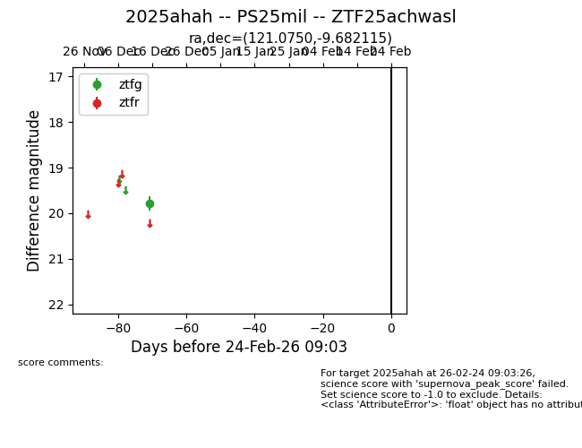
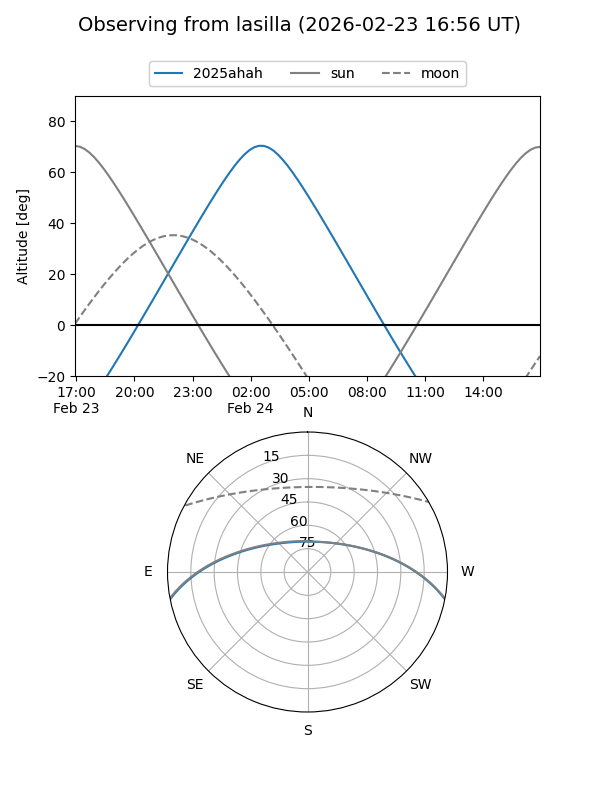
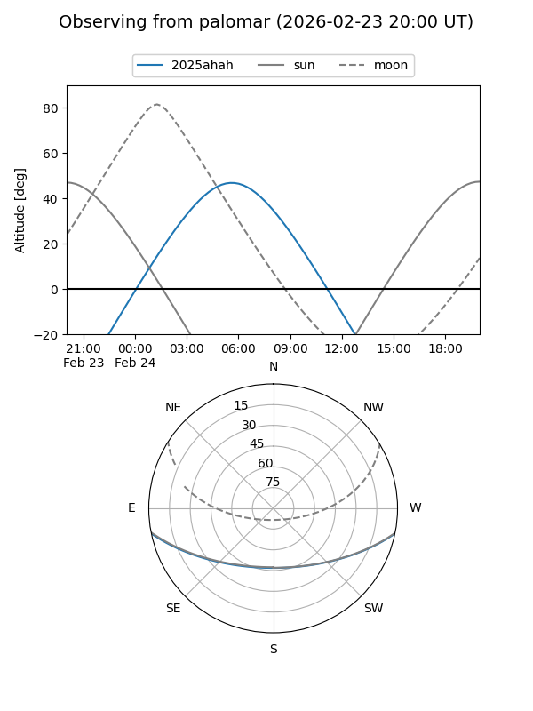

2025ahah
Target 2025ahah at 2025-12-18 11:18
Aliases and brokers:
FINK: fink-portal.org/ZTF25achwasl
Lasair: lasair-ztf.lsst.ac.uk/objects/ZTF25achwasl
ALeRCE: alerce.online/object/ZTF25achwasl
TNS: wis-tns.org/object/2025ahah
YSE: ziggy.ucolick.org/yse/transient_detail/2025ahah
alt names
ZTF25achwasl (ztf,fink_ztf)
2025ahah (tns,yse)
Coordinates:
equatorial (ra, dec) = 121.0750,-9.68211
equatorial (HMS+DMS) = 08:04:17.99,-09:40:55.61
galactic (l, b) = (230.1506,+11.39384)
Photometry
last ztfg=19.79
1 ztfg detections
Lightcurve

Visibility


Additional plots